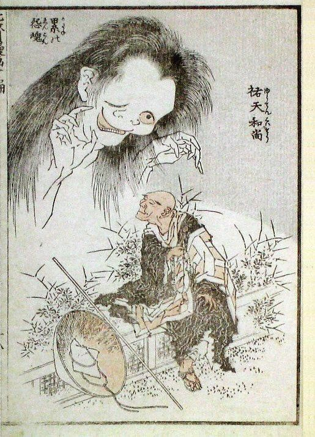

葛飾北斎の名所浮世絵揃物『富嶽三十六景』全46図中の1図で、「赤富士（あかふじ）」と通称される。神奈川沖浪裏」「山下白雨」と合わせて三大役物と呼ばれる。「神奈川沖浪裏」に次いで広く世界に知られているであろう代表作の一つ。
葛飾北斎の名所浮世絵揃物『富嶽三十六景』全46図中の1図。「石班澤」を「かじかざわ」と読むのは、カジカと「石斑魚（ウグイ）」を混同したための誤記と考えられている。 画面中央には岩場から波打つ富士川に向かって投網を引く漁師の姿が描かれ、三角形の構図が富士の稜線と相似形を成す。漁師の傍らには子どもと籠が描かれている。

北斎漫画は、葛飾北斎が絵手本として発行したスケッチ画集である。
初編の序文によると、1812年秋頃、後援者で門人の牧墨僊（1775年 - 1824年）宅に半年ほど逗留し300余りの下絵を描いた。その後1878年（明治11年）までに全十五編が発行された。人物、風俗、動植物、妖怪変化まで約4000図が描かれている。
この絵手本は国内で好評を博しただけでなく、1830年代ヨーロッパに磁器、陶器の輸出の際、緩衝材として浮世絵と共に偶然に渡り、フランスの印象派の画家クロード・モネ、ゴッホ、ゴーギャンなどに影響を与えたとされる。
左の絵 「祐天和尚と累」 「北斎漫画」十編十八丁表
葛飾北斎が描いた琉球の風景画(全８点)
縁起の良い六角形の箱に届けたい品をコンパクトに収納。風呂敷で包んだ、見て驚き、解いて楽しい、開けて嬉しい贈り物。
自然なしっとり感と、口溶けのよい食感を味わうことができる、こだわりのバームクーヘンをお届けします。
2,600円から50,600円のものまで、予算に合わせたこだわりのカタログギフトをご用意。こだわり派の方へ向けた国産厳選のカタログもあります。